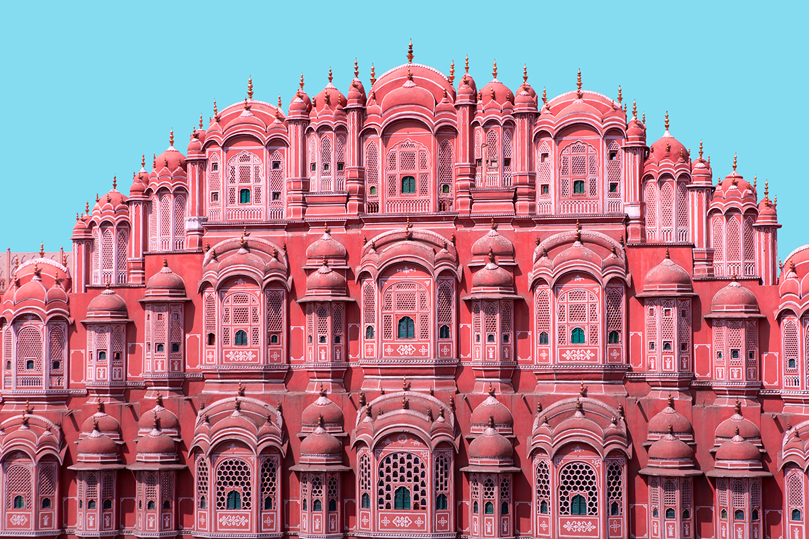

About Hawa Mahal
Hawa Mahal, also known as the Palace of Winds, is a beautiful palace in Jaipur, India. It was built in 1799 by Maharaja Sawai Pratap Singh and is renowned for its unique architecture with numerous windows, allowing cool air to circulate and providing a view of the city.
Architecture
The palace is constructed of red and pink sandstone and features a stunning facade with 953 small windows (jharokhas), intricately designed to allow ventilation. The five-story structure resembles a honeycomb and is a prime example of Rajput architecture.
Historical Significance
Hawa Mahal served as a place for the royal women to observe street festivities without being seen. It has cultural and historical importance, representing the rich heritage of Jaipur and Rajasthan.
Visit Hawa Mahal
If you plan to visit Hawa Mahal, be sure to explore the intricate architecture and enjoy the panoramic views of Jaipur. Check the official website for visitor information, including tickets and opening hours.